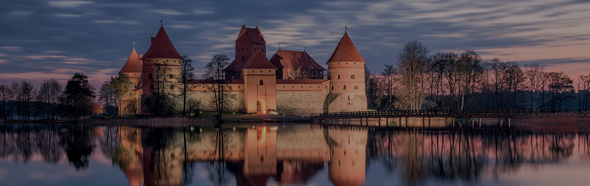

.png)



Зарисовки из Литвы
и Беларуси
и Беларуси
10:30. Прибытие в Вильнюс на ж/д вокзал. Встреча с гидом. Завтрак.
11:30 Поездка начинается с посещения уголка «русской культуры» - усадьбы-музея А.С.Пушкина, расположенной среди удивительной местности, которую называют Литовской Швейцарией. В музее, расположенном в усадебном доме имения семьи младшего сына А. С. Пушкина, находится несколько экспозиций, посвященных великому русскому поэту. Можно также ознакомиться с экранизациями и музыкальными произведениями, в основу которых легли темы и мотивы его произведений. В шести мемориальных комнатах сохранен элегантный старинный интерьер.
12:30 Посещение Дворца Радзивиллов. В крыле маньеристского дворца, который в XVII веке называли «Вильнюсским Лувром», долгое время экспонировалось искусство зарубежных стран (Западной и Центральной Европы, России). В настоящее время здесь готовятся самые крупные тематические выставки Литовского художественного музея. Во дворце можно ознакомиться с портретной галереей рода Радзивиллов XVIII века. Здесь же действует и Центр познания искусства при Художественном музее Литвы.
14:30 Обед в центре города в ресторане Bernelių užeiga.
15:30-16:00 Посещение Дворца Великих Князей Литовских. В IV–VIII веках на этом месте находилось деревянное поселение, на территории которого во второй половине XIII века появились каменные замковые укрепления. В первой половине XIV века они стали важнейшим строением на обносимой каменной стеной обширной территории Нижнего замка. Со времен первых Гедиминовичей здесь находилась резиденция почти всех правителей Литвы. Они постоянно расширяли замковый дворец, а в конце XV века приступили к его капитальной реконструкции. В 2000 году Сейм (парламент) Литовской Республики принял закон о воссоздании Дворца правителей и его назначении. Спустя два года начались строительные работы. В 2013 году два из четырех корпусов Дворца правителей открылись для посещения. В Национальном музее Дворец Великих Князей Литовских можно осмотреть две постоянные экспозиции, отражающие функции исторической резиденции. Многочисленные находки вместе с макетами развития дворца, иконографическими материалами и текстовыми комментариями демонстрируются в экспозиции исторического и архитектурного развития Дворца (маршрут I). Экспозиция восстановленных исторических репрезентативных интерьеров Дворца (экспозиция II) приведет посетителей в репрезентативные покои с восстановленными историческими интерьерами поздней готики, ренессанса и раннего барокко, а также в специальный зал сокровищницы. Прогулка на гору Гедиминаса, где находится Башня. Посетители особенно любят эту башню, так как с её вершины открывается великолепный вид на Старый город и центр. В башне вы увидите реконструкционные макеты, вооружение, иконографические материалы Древнего Вильнюса со 2-ой половины XIV до начала XVII века. На гору Гедиминаса можно подняться пешком по мостовой из сквера Швянтарагиса или на фуникулёре из закрытого двора Национального музея.
19:00(ориентировочно ) Трансфер в гостиницу. Размещение в отеле 3* (ECOTEL или URBIHOP)
Завтрак «шведский стол» в отеле.
09:00 Вас ждет увлекательная поездка ( 100 км.) в Каунас - второй по величине город Литвы, расположенный у слияния рек Нямунаса и Нерис, который с 1920 по 1940 год был временной столицей Литовской Республики и славиться уникальной архитектурой, отличной от города Вильнюса.. Здесь Вы увидите Ратушу, которую называют «белой лебедью», полюбуетесь всеми европейским архитектурными стилями. Вы увидите дом Перкунуса (Грома) – одно из самых оригинальных строений позднего готического стиля в Литве. Полюбуетесь старинным готическим костёлом, который построил Великий князь Витаутас в конце 14 века, увидите самый большой в Литве готический Кафедральный костёл Св. Петра и Павла с уникальным бароковым интеръером. Самая знаменитая пешеходная улица Каунаса - Лайсвес Аллея, которую называют «маленьким Парижем» с его уютными магазинчиками и кафе. Каунас славится своим знаменитым музеем художника и композитора К.М. Чюрлёниса и музеем Чертей, о котором знает весь мир. Переезд в Тракай ( 80 км.).
14:30 Обед в ресторане караимской кухни. В меню известное караимское блюдо —кибинай, представляет собой пирожки в форме полумесяца из теста с начинкой из рубленного мяса с большим количеством лука и специй. За это ставшее исключительно популярным блюдо Литва должна быть благодарна Великому князю Витаутасу. Это он более 600 лет назад привез из Крыма в Литву караимов, а те – «кибинай» и свою уникальную культуру, которую сохранили до наших дней.
15:30 Тракай - древняя столица Литвы, городок между озер. Экскурсия в Тракай. Главная достопримечательность города - знаменитый Тракайский замок - единственный готический замок в Восточной Европе, стоящий на острове озера Гальве. Чтобы попасть в крепость, посетители должны пройти по двум деревянным мостам. Центром архитектурного ансамбля замка является княжеский дворец с высоким донжоном, окруженный толстой крепостной стеной. Свободное время, посещение сувенирного базарчика на берегу озера.
18.00 Возвращение в Вильнюс к 18:00. Свободное время.
Завтрак «шведский стол» в отеле. Освобождение номеров (вещи в камере хранения). Встреча с гидом в холле гостиницы.
09:00-10:30 Пешеходная экскурсия по Старому городу Вильнюса: костелы св.Анны и Бернардинцев, Университет, церкви Пятницкая и Никольская, сувенирный базарчик, ратуша, собор св.Духа и монастырь, барбакан и Святые ворота с иконой вильнюсской Мадонны.; Президентская площадь и алумнат. Во время прогулки – посещение музея янтаря. Свободное время.
12.00-13.00 Экскурсия по Ужупис (Заречье) . Ужупис является одним из старейших районов Вильнюса, в исторических источниках упоминается уже в шестнадцатом веке. Тогда он был бедным пригородом, который жители Вильнюса в течение длительного времени, пытались обходить. Но с течением времени, в Заречье начали селиться художники, которые сделали его настоящей республикой художников со своим правительством, конституцией, гимном, традициями и праздниками.
13:30 – обед в ресторане “Aula” в Старом городе.
14.30 Подача автобуса к ресторану. Трансфер в гостиницу ,получение вещей из камеры хранения. Посадка в автобус с багажом. Трансфер на вокзал.
15.00 Трансфер на ж/д вокзал г.Вильнюса
15.58 Отправление в Минск.
18.45 Прибытие в Минск.
19.00 Встреча с гидом в зале ожидания, возле табло слева относительно выхода из вокзала .Встречающий с табличкой «КРиСТ». Краткая Обзорная экскурсия по городу Минск, которая познакомит с достопримечательностями, историей и культурой столицы Беларуси. На «Острове Слез» ознакомитесь с незабываемым памятником - часовней в честь воинов «афганцев». В ходе пешеходной экскурсии по Верхнему городу Вы увидите православный Кафедральный собор, здание городской Ратуши, Кафедрального Мариинского костела, бывшие базилианские и бернардинские монастыри, восстановленное здание фешенебельной гостиницы «Европа». В завершение этого путешествия по белорусской столице - пешеходная прогулка по Троицкому предместью, где кипела жизнь города в XIX в. и куда сегодня влекут гостей музеи, сувенирные лавки, уютные кафе, корчмы и многое другое.
21.45 Трансфер на ж/д вокзал
22.23 Отправление в Москву